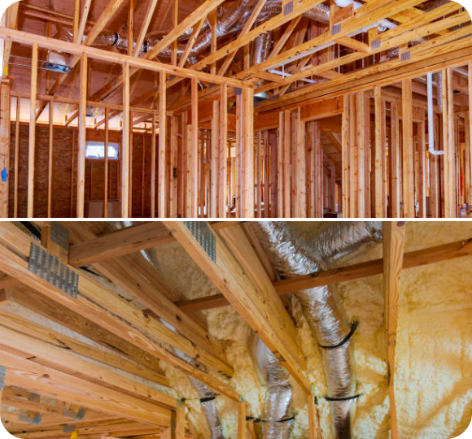
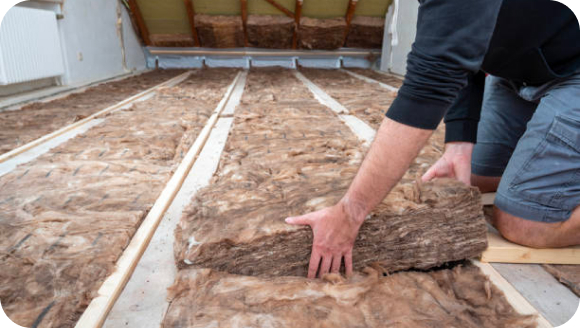
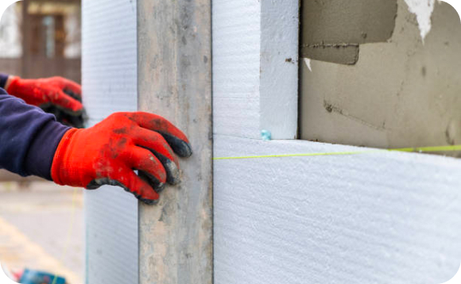
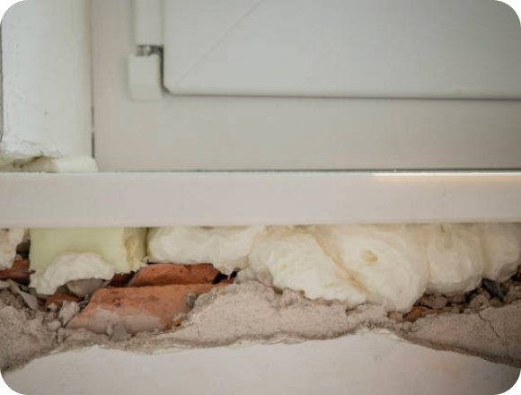

How Proper Insulation Can Improve Your Home's Cooling Efficiency
Proper insulation plays a crucial role in maintaining a comfortable indoor temperature and reducing the workload on your air conditioning system. By investing in insulation upgrades and sealing air leaks, homeowners can improve cooling efficiency, lower energy bills, and enhance overall comfort. In this article, we'll explore the importance of proper insulation and how it contributes to a more efficient and sustainable home cooling environment.
-
Thermal Resistance
and Heat TransferInsulation acts as a barrier against heat transfer, preventing hot outdoor air from infiltrating your home and cool indoor air from escaping. By enhancing thermal resistance, insulation helps maintain a consistent indoor temperature, reducing the need for constant cooling and improving energy efficiency
 -
Attic Insulation
Proper attic insulation is essential for preventing heat gain in the summer months. Installing insulation in the attic helps block radiant heat from the sun, reducing the temperature differential between the attic and living spaces below. This results in less heat transfer into your home and lower cooling costs
 -
Wall Insulation
Insulating exterior walls helps minimize heat gain through conduction, particularly in homes with inadequate insulation or older construction. Adding insulation to wall cavities or applying rigid foam insulation board can significantly reduce thermal bridging and improve overall energy efficiency
 -
Air Sealing
In addition to insulation, air sealing is critical for preventing air leaks and drafts that compromise cooling efficiency. Common air leakage points include gaps around windows and doors, electrical outlets, and plumbing penetrations. Sealing these leaks with caulk, weatherstripping, or spray foam insulation helps maintain airtightness and reduce energy waste
-
Duct Insulation
and SealingInsulating and sealing ductwork is essential for maximizing the efficiency of your air conditioning system. Ducts that run through unconditioned spaces, such as attics or crawl spaces, should be properly insulated to prevent heat gain or loss during air distribution. Additionally, sealing duct joints and connections helps minimize air leaks and ensures efficient airflow to each room.

Proper insulation is a fundamental aspect of home cooling efficiency, reducing heat gain, minimizing energy waste, and enhancing overall comfort. By investing in attic, wall, and duct insulation, as well as air sealing measures, homeowners can create a more energy-efficient and sustainable living environment while enjoying lower cooling costs and improved indoor comfort.